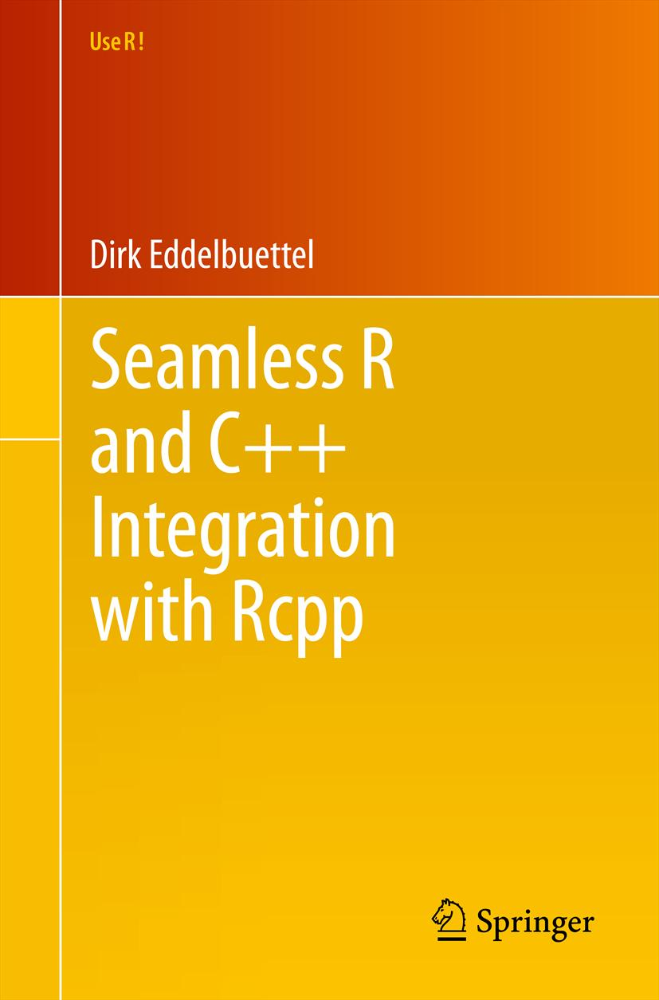

Pierre et Benjamin nous ont préparé ‘quelque chose sur Shiny’:
Ateliers passés
Introduction à plotly
Au cours d’une séance découverte un peu spécial, donnée lors de l’assemblée générale du département de mathématique et informatique de l’INRA, Mahendra nous a fait découvrir les potentialités de {plotly,ggplotly,crosscall}
Le chargement peut prendre du temps (googlefonts…)
rSTAN, un outil d'inférence bayésienne
Matthieu et Éric nous propose une séance sur {rSTAN}, l’interface R à la bibliothèque C++ Stan. Il s’agit d’algorithme inférence b yésienne utilisant une variante du Monte-Carlo Hamiltonien. On peut aussi faire de l’inférence fréquentiste par optimisation.
Gros travail de Éric et Matthieu, et une base de document introductif très fouillé, merci!
Développement de package
Dans la continuité de ce qui a été fait à Beg-meil](https://stateofther.github.io/finistR2018/atelier3_package_creation.html), je vous propose un tour d’horizon des bonnes pratiques et de l’ensemble des outils disponibles pour réaliser le développement d’un package R. On parlera github, travis, {pkgdown], roxygen2, déploiement, {testthat], appveor, configure, Makevars, {usethis}, {devtools}, yaml, etc. Venez avec en tête de mettre les main dans le cambouis pour votre propre package.
Organisation des premières satRday française à Paris du 23 février

Séance dédiée à la préparation des satRday du lendemain:
Avec tous les bénévoles du groupe !
Efficient analysis of large-scale matrices with two R packages: bigstatsr and bigsnpr
R package {bigstatsr} provides a special class of matrix whose data is stored on the disk instead of the RAM, but you can still access the data almost as if it were in memory. It is particularly useful is you have a large matrix to analyze but not enough RAM on your computer. It can still be useful for matrices that fit in your RAM because package {bigstatsr} provides very efficient and parallelized algorithms (have you ever found cor or svd too slow?
Pimp my exam
Marco et Vincent vous proposent de prendre un peu de temps pour apprendre à se servir du package exams (disponible sur le CRAN) pour générer automatiquement des examens (QCM ou autres), corriger automatiquement ces examens, gérer un ensemble d’exercices collectivement, mettre en place une plateforme de e-learning. Gros programme mais un joli cadeau de Noël, puisque tout se fait en quelques lignes de code R !
Modeling in the Tidyverse and applications to metagenomics data

Antoine, notre fanatique du tidyverse, nous propose de jeter un coup d’oeil à broom et rsample, des packages de tidymodels, pour travailler proprement (aka en format tibble) avec les sorties S3 des méthodes statistiques comme lm ou kmeans et faciliter l’utilisation des méthodes de rééchantillonage.
Fancy plotting with ggraph, gganimate

Un duo de choc, Raphaëlle et Marie, pour une séance dense sur laquelle était posée l’ombre du data imaginist – et vive Harry Potter.
Bases en Rcpp

Les trois mousquetaires Timothée, Mathieu et Félix (a.k.a riri fifi loulou) proposent une séances complète d’introduction à Rcpp accompagné de travaux pratiques.
Les documents de la séances:
Pour compléter, voir la page du bootcamp finistR2018 dédiée aux modules Rcpp.